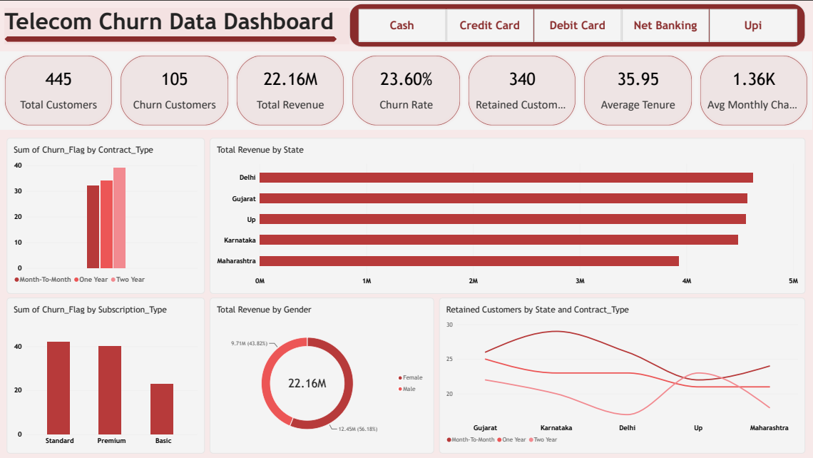

Project 05 / Churn analytics
Telecom Customer Churn Analysis
Overview
This end-to-end project turns a messy telecom customer dataset into a clean, interactive dashboard for tracking churn, revenue, and retention. I cleaned and prepared the data with Python, loaded it into MySQL, and connected it to Power BI to explore customer behavior across contracts, subscription plans, states, and payment methods.
The cleaned dashboard dataset contains 445 customers. Its headline metrics include churn rate, retained customers, total revenue, average tenure, and average monthly charges.
Workflow & tools
- Excel: Source of the raw telecom customer dataset.
- Python (pandas, NumPy): Removed duplicates, standardized text, filtered invalid ages and charges, handled missing values, fixed dates, and engineered customer and churn metrics.
- Jupyter Notebook: Documented the cleaning workflow step by step.
- SQLAlchemy and PyMySQL: Loaded cleaned customer data into the database.
- MySQL: Stored the prepared data for analysis.
- Power Query and Power BI: Connected the data and built the interactive dashboard, using DAX measures for churn, retention, and revenue.
Key insights
- 105 of 445 customers churned, a churn rate of 23.60%.
- Standard and Premium subscription plans account for the most churn, while Basic has the least.
- Churn appears across contract types; two-year contracts show slightly higher churn than month-to-month contracts.
- Delhi, Gujarat, and Uttar Pradesh lead in revenue among the five states; Maharashtra generates the least.
- Female customers contribute 56.18% of revenue in the dataset.
Dashboard preview


Content from the project README on GitHub ↗.